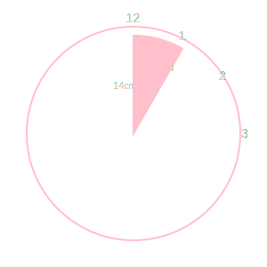
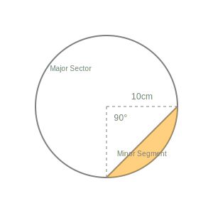
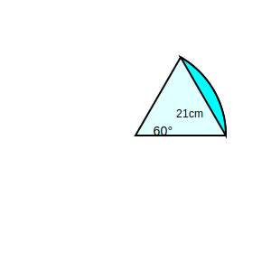

Example 1. Find the area of the sector of a circle with radius 4 cm and of angle 30°.
Also, find the area of the corresponding major sector (Use π = 3.14).

r = 4 cm. θ = 30°.
Area of Sector = (θ/360) × πr²
= (30/360) × 3.14 × 16
= (1/12) × 3.14 × 16
= 4.19 cm².
Major Sector Area = Area Circle - Area Minor Sector
= 3.14 × 16 - 4.19
= 50.24 - 4.19 = 46.05 cm².
Sector: 4.19 cm²; Major Sector: 46.05 cm².
Example 2. Find the area of the segment AYB shown in Fig., if radius of the circle is 21
cm and ∠AOB = 120°. (Use π = 22/7)

r = 21 cm. θ = 120°.
Area of Sector OAYB = (120/360) × (22/7) × 21 × 21
= (1/3) × 22 × 3 × 21 = 462 cm².
Area of Triangle OAB. Draw OM perpendicular to AB.
In right ∆ OMA, ∠AOM = 60°.
OM = 21 cos 60 = 21/2. AM = 21 sin 60 = 21√3/2.
Base AB = 2AM = 21√3.
Area ∆ OAB = (1/2) × 21√3 × (21/2) = (441/4)√3 cm².
Area of Segment = 462 - (441/4)√3 cm².
Using √3 = 1.73, Area = 462 - 190.95 = 271.05 cm².
Area = 271.05 cm².
Example 3. Find the area of the shaded region in Fig., where ABCD is a square of side 14
cm and APD and BPC are semicircles.

Side of square = 14 cm. Radius of semicircle = 14/2 = 7 cm.
Area of Square = 14 × 14 = 196 cm².
Area of 2 Semicircles = 2 × (1/2)πr² = πr².
= (22/7) × 7 × 7 = 154 cm².
Area of Shaded = Area Square - Area 2 Semicircles.
= 196 - 154 = 42 cm².
Area = 42 cm².